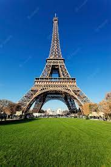
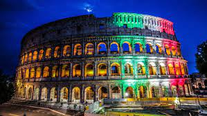
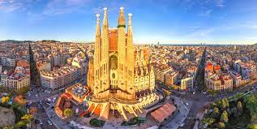

Paris é a capital da França e um dos destinos mais populares da Europa. Conhecida por sua Torre Eiffel icônica, museus de renome como o Louvre e sua culinária deliciosa, Paris cativa os visitantes de todo o mundo.
Roma, a cidade eterna, é famosa por suas ruínas antigas, como o Coliseu e o Fórum Romano. Os visitantes podem explorar a rica história da cidade enquanto desfrutam da comida italiana autêntica.
Barcelona, na Espanha, é conhecida por sua arquitetura única, incluindo as obras de Antoni Gaudí, como a Sagrada Família. As praias de Barcelona também atraem muitos turistas durante o verão.
